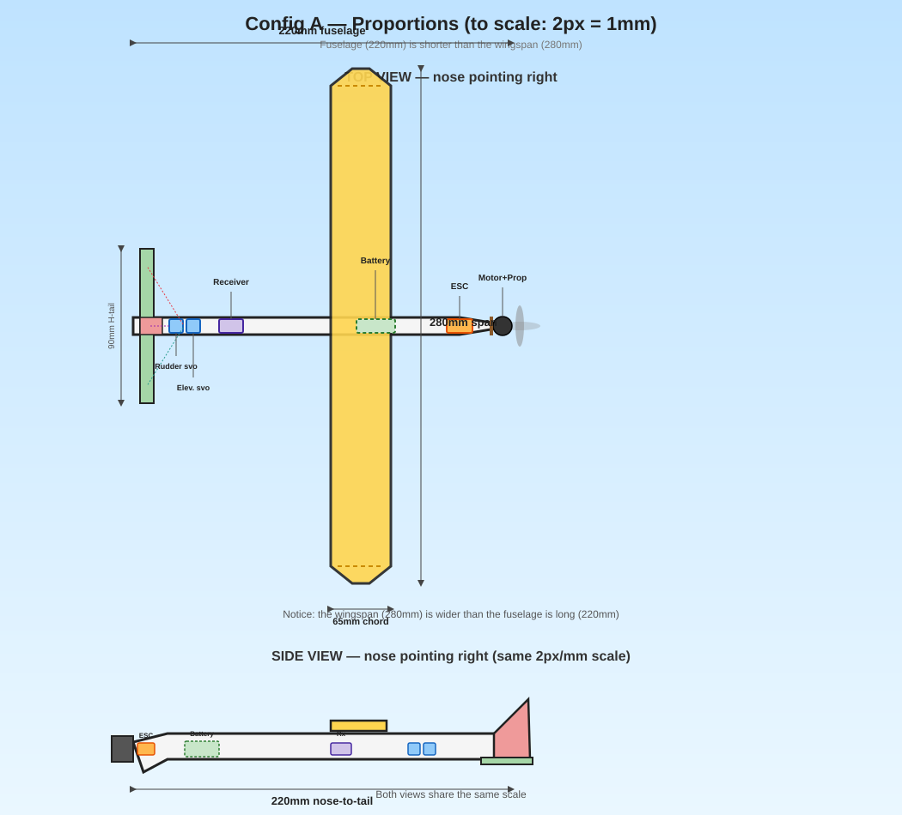
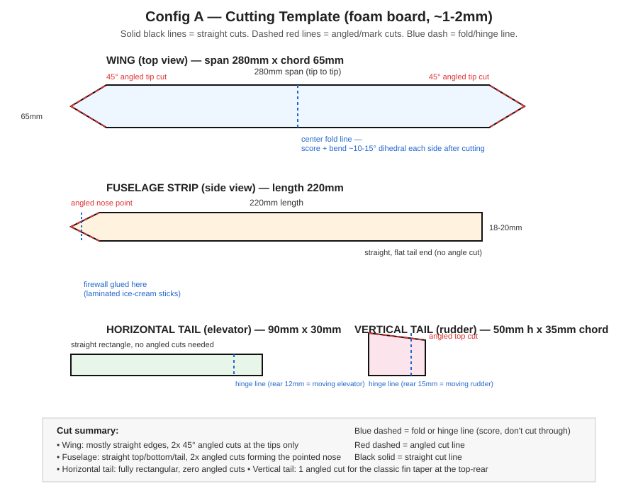
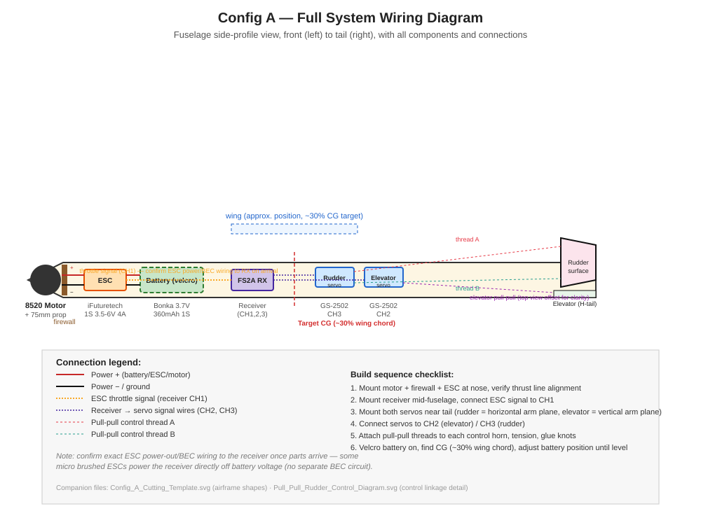
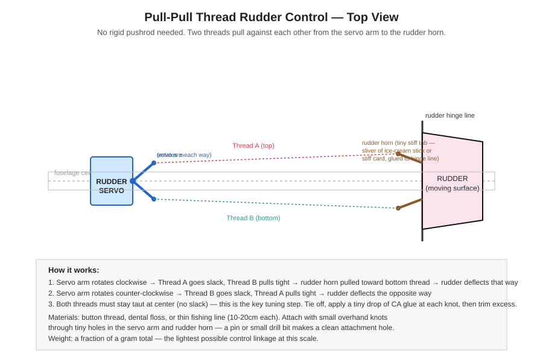

Two separate, reusable hardware "kits" — build multiple airframes around either one as you experiment with different frame shapes/sizes. Config A is the lighter, quieter, more indoor-friendly option. Config B uses common brushless hobby hardware, giving more power/speed at the cost of size, weight, and noise.
CONFIG A — 1S Coreless Platform
The lightweight, quiet, indoor-friendly platform. Best suited to small/light frames (~250-320mm wingspan class). This is the primary, fully-sourced kit.
Hardware list
| Component | Spec | Link |
|---|---|---|
| Motor + Propeller | 8520 coreless motor (8.5x20mm) + 75mm 2-blade propeller, Set of 4 (2xCW+2xCCW) | Anil Electronic Store |
| ESC | 1S Brushed Motor Electric Speed Control Module, 3.5V-6V, 4A | iFuture Technology |
| Servo | GS-2502 digital micro servo, 2.2g, 3.7-6V, mini JST connector (x2 per plane — elevator + rudder) | Evelta |
| Receiver | FlySky FS2A-4CH, AFHDS 2A, ~1g | Recommended |
| Battery | Bonka/Orange 3.7V 360mAh 25C 1S LiPo (x2 — one flying, one spare) | Robu |
| Charger | 4-Port DC5V 1S Balance Charger | Robu |
| Transmitter | FlySky FS-i6, 2.4GHz, 6CH | Recommended |
Estimated weight budget (all-up)
| Part | Weight |
|---|---|
| Motor + prop | ~5-6g |
| ESC | ~2-3g |
| 2x servo | ~4.4g |
| Receiver | ~1g |
| Battery (360mAh) | ~9-10g |
| Airframe + reinforcement | ~4-8g (depends on size/material) |
| Total | ~26-33g |
Suggested frame design — "Config A Standard" (baseline template)
Use this as your default starting point; adjust ±20% freely once you're comfortable trimming.
Wing — two options, same total area (~18,200mm²), pick based on your priority
| Option 1: Efficient (higher aspect ratio) | Option 2: Compact (lower aspect ratio) | |
|---|---|---|
| Span | 280mm | 220mm |
| Chord | 65mm | 83mm |
| Aspect ratio | 4.3:1 | 2.65:1 |
| Best for | Best glide efficiency, most benefit from your limited-thrust motor | Easier to store/transport/manage, more structurally rigid |
| Tradeoff | Wider footprint, slightly more flex-prone (leans more on the dihedral fold) | A bit more drag for the same lift, asks slightly more of the motor |
Both are fully valid — pick Option 1 if squeezing the most flight performance out of the 8520/75mm combo matters most to you, or Option 2 if a smaller storage footprint and a stiffer wing matter more. Weight & balance is calculated for both below, so either can be built with confidence.
- Airfoil: flat plate is fine; if you want a little more lift, add a slight curve by wetting and pre-bending the foam, or glue a thin bamboo skewer along the leading edge underside for a subtle undercamber
- Dihedral: bend each wing tip up ~10-15° from a centerline hinge (worth keeping on either option, for roll stability without needing ailerons)
Fuselage
- Length (nose to tail): 220mm
- A simple flat strip, 18-20mm wide, tapering slightly narrower toward the tail
- Motor firewall at the very nose (see Motor Mounting below)
Horizontal tail (elevator)
- Span: 90mm, chord: 30mm
- Hinge the rear 12mm as the moving elevator surface (tape hinge, or thin uncut foam hinge)
Vertical tail (rudder)
- Height: 50mm, chord: 35mm
- Hinge the rear 15mm as the moving rudder surface
Motor position — tractor (nose) vs pusher (rear) vs mid-mount
Worth deciding deliberately, not defaulting blindly. Three real options:
| Position | How it works | Pros | Cons |
|---|---|---|---|
| Tractor (nose-mounted, prop pulls from front) | Motor at the very front, prop faces forward, pulls the plane through the air | Simplest to build, prop is clear of the wing/fuselage, most common/proven for a first build | Prop is exposed at the front — first thing to hit the ground on a nose-down landing |
| Pusher (rear-mounted, prop faces backward) | Motor at the tail, prop faces backward, pushes the plane | Prop is protected from front-first crashes; keeps the nose clean for a camera/payload later | Prop can strike the ground on tail-low landings; thrust line harder to align with CG; motor wiring runs the full fuselage length |
| Mid-mounted (motor partway back on the fuselage, still tractor orientation) | Same forward-facing prop, just moved back from the very tip of the nose | Slightly better weight distribution if your nose is very light/short | Prop wash passes directly over the fuselage/wing root, adds a little drag/turbulence — rarely worth it unless your specific frame shape demands it |
Recommendation for Config A: tractor, nose-mounted
For conventional airframes with a real forward nose/stick — nose-mounted tractor is the right, simplest choice. This is what the frame dimensions and firewall guidance above already assume. Reasons:
- Both airframes already have a defined nose area to reinforce (the firewall)
- Simplest wiring — motor/ESC sit right at the front, battery/receiver/servos trail back in a straight line, no wires running past the motor
- These are gentle "slow flyer" builds, not aggressive 3D/acrobatic planes — a pusher configuration's crash-protection benefit matters more for planes that get flown hard and crash often; for your gentle first builds, it's not worth the added complexity
Bottom line: mount the motor at the very front of the nose, prop facing forward (tractor), thrust line parallel to the fuselage — this is genuinely the standard, lowest-risk choice for a first powered conversion of a conventional glider shape like yours.
Practical mounting steps
- Build the firewall from 2-3 laminated ice-cream sticks (glued in a small cross/plus shape for rigidity), glued into the very front of the nose — bare foam alone will work loose under motor vibration over time
- Check thrust line alignment from both top-down (prop shaft parallel to the fuselage centerline, not angled left/right) and side-on (not angled up/down) before final gluing
- Route the 2 motor wires straight back along the fuselage underside to the ESC, which sits just behind the firewall
Component placement (front to back)
[Motor + Prop] — [Firewall] — [ESC] — [Battery, velcro-mounted] — [Receiver] — [Rudder servo] — [Elevator servo] — [Tail]Battery sits roughly at or just behind the wing's leading edge as a starting guess — this is your primary CG adjustment tool, so mount it on hook-and-loop tape, not glue.
Center of Gravity (CG) — critical, check before every first flight of a new frame
- Target CG: ~30% back from the wing's leading edge (measure the chord — 65mm chord means CG target is ~20mm back from the leading edge)
- Mark this point on both sides of the fuselage
- Support the plane gently at these two marks with fingertips (motor off) — it should hang level or very slightly nose-down
- Slide the battery forward (nose-heavy fix) or backward (tail-heavy fix) until it balances correctly. Do this before every maiden flight of a new frame — different foam/glue choices change the balance point.
Weight & balance calculation — both wing options
Since both servos sit near the tail, it's worth checking on paper whether they pull the balance too far back for the battery to compensate. Using estimated component masses/positions (nose = 0mm, tail = 220mm), with the wing mounted at the fuselage midpoint (110mm) in both cases:
| Option 1 (280x65mm) | Option 2 (220x83mm) | |
|---|---|---|
| Wing leading edge | 77.5mm from nose | 68.5mm from nose |
| Wing trailing edge | 142.5mm from nose | 151.5mm from nose |
| Target CG (30% chord) | 97.0mm from nose | 93.4mm from nose |
| Non-battery CG (all parts except battery) | 85.7mm from nose | 85.7mm from nose |
| Required battery position | 121mm from nose | ~110mm from nose |
| Battery position relative to wing | 44mm behind LE, 21mm ahead of TE — biased toward the rear of the wing | 41mm behind LE, 41mm ahead of TE — centered under the wing |
Fixed component table used for both calculations:
| Component | Mass | Position from nose |
|---|---|---|
| Motor + 75mm prop | 5.5g | 8mm |
| Firewall | 1.0g | 12mm |
| ESC | 2.5g | 25mm |
| Airframe (foam, distributed) | 6.0g | 100mm |
| Receiver | 1.0g | 150mm |
| Rudder servo | 2.2g | 195mm |
| Elevator servo | 2.2g | 205mm |
| Battery (solved for) | 9.5g | see above |
Conclusion: both options are validated — the battery lands at a normal, achievable position under the wing either way, just biased slightly toward the rear for Option 1 versus centered for Option 2. Neither requires an extreme position or additional nose/tail weight to compensate.
Practical takeaway — battery velcro placement:
- Option 1 (280x65mm): size the velcro strip to span from the wing's leading edge to just short of its trailing edge, biased toward the rear half
- Option 2 (220x83mm): size the velcro strip to span the middle third of the wing's chord, centered
Either way, this gets you in the right neighborhood — the physical hands-under-the-wing balance test (above) gets you the exact final position once real components are built in and weighed.
Simple cutting layout (for a single sheet of ~1-2mm foam board)
Option 1 (280x65mm wing):
┌─────────────────────────────────────────────┐
│ │
│ WING (280 x 65mm) │
│ │
├───────────────────────────────────────────────┤
│ FUSELAGE STRIP (220 x 18-20mm, tapered) │
├──────────────────────┬────────────────────────┤
│ H-TAIL (90 x 30mm) │ V-TAIL (50 x 35mm) │
└──────────────────────┴────────────────────────┘Cut from a ~300x120mm sheet.
Option 2 (220x83mm wing):
┌─────────────────────────────────────┐
│ │
│ WING (220 x 83mm) │
│ │
├───────────────────────────────────────┤
│ FUSELAGE STRIP (220 x 18-20mm) │
├──────────────────┬────────────────────┤
│ H-TAIL (90x30mm) │ V-TAIL (50x35mm) │
└──────────────────┴────────────────────┘Cut from a ~250x150mm sheet — a bit more compact overall despite the wider wing, since the span is shorter.
Both leave enough spare margin on the sheet to redo a piece if a cut goes wrong.
Control linkage — pull-pull thread (recommended over rigid pushrods)
At this weight scale, a genuinely lighter and equally effective option than a rigid wire pushrod is pull-pull thread control:
- Glue a tiny stiff tab (a sliver of ice-cream stick works well) perpendicular to each control surface's hinge line — this is the control horn
- Tie two threads (button thread, dental floss, or thin fishing line) from the servo arm: one to the top of the control horn, one to the bottom
- As the servo rotates one way, one thread pulls taut while the other slackens — this is what deflects the control surface, with no rigid rod anywhere in the system
- Both threads must be taut with the surface centered (no slack) — tie one first, center everything, then tie the second snug against it. A tiny drop of CA glue on each knot stops slipping; trim excess thread after.
- Total added weight: a fraction of a gram — lighter than even a short wire pushrod
See the pull-pull rudder diagram in the Visual references section for the exact geometry.
Servo placement
- Mount each servo close to the control surface it operates — short thread runs mean less slack to manage and less wiring weight
- Rudder servo: near the tail, just ahead of the vertical fin's hinge line, oriented so its arm rotates in the horizontal plane (servo body flat, shaft pointing up) to match the rudder's left-right motion
- Elevator servo: right next to the rudder servo (both near the tail), oriented so its arm rotates in the vertical plane (servo body on its side, shaft pointing sideways) to match the elevator's up-down motion
- Hollow a small pocket in the foam sized to each servo body — friction-fit, with a small dab of glue at the edges if loose. Don't glue directly to unsupported flat foam; keep the servo case edges backed by surrounding structure.
- Route servo wires forward to the receiver along the fuselage side, not dangling loose
CG note: both servos sitting near the tail contribute to tail-heaviness — this is exactly why the battery (your heaviest single part) is mounted further forward on velcro, used as the primary CG fine-tuning tool once the servos are permanently glued in place.
Visual references
The diagrams below are Option 1 (280x65mm wing) proportions — Option 2 (220x83mm) uses the same component layout and wiring, just with the shorter/wider wing shape from the table above.
Proportions + hardware overlay (top view + side view, dimensioned):

Cutting template (straight vs. angled cut lines marked):

Full system wiring diagram (motor/ESC/battery/receiver/servos, all connections):

Pull-pull rudder control linkage detail:

Assembly order
- Cut all 4 pieces
- Glue the firewall into the fuselage nose
- Glue the wing perpendicular to the fuselage at roughly its midpoint (adjust once CG is confirmed)
- Glue the tail pieces on at the rear, vertical tail perpendicular to horizontal tail
- Cut and hinge the elevator/rudder moving surfaces
- Mount motor, ESC, receiver, servos per the placement diagram
- Attach pull-pull threads from each servo to its control surface's horn (see Control linkage section above), tension and glue the knots
- Velcro the battery on, find CG, adjust
- Unpowered hand-glide test first, then first powered flight
CONFIG B — 2S-3S Brushless Platform
Uses common brushless hobby hardware. More power, more speed, more noise — better suited to a slightly larger frame (~400-500mm class) and outdoor or larger indoor space flying.
Hardware list
| Component | Spec | Source |
|---|---|---|
| Motor | Readytosky MT2204-2300KV (brushless) | Recommended |
| ESC | EMAX Lightning 20A BLHeli, 2-4S, no BEC | Recommended — RC Mumbai |
| Servo | 2x Tower Pro SG90, 9g | Recommended |
| Receiver | FlySky FS-iA6B, 6CH (more current headroom than FS2A, suits this higher-power build) | Recommended |
| Propeller | Small 2-blade plane prop, ~5x3 or 6x4 (NOT multi-blade FPV racing props — those are wrong pitch/type for a plane; source a proper 2-blade wood or plastic prop sized for this motor/voltage) | To source |
| Battery | 2S (7.4V) LiPo, ~450-850mAh, 25C+ | To source |
| Separate BEC | Since the EMAX ESC has no BEC, you need a small separate 5V UBEC to power the FS-iA6B receiver + 2 SG90 servos | To source |
| Charger | 2S-capable balance charger (a 1S-only charger won't charge this — need a 2S-capable unit) | To source |
Why this motor/ESC pairing makes sense
MT2204 at 2300KV on 2S (7.4V) gives a no-load speed around 17,000 RPM — right in the useful range for a small 2-blade prop on a foam plane this size, rather than the aggressive multi-blade racing props it currently wears. The EMAX Lightning 20A ESC is explicitly rated 2-4S, comfortably covering this voltage with plenty of current headroom (your motor will draw nowhere near 20A at this scale).
Estimated weight budget (all-up)
| Part | Weight |
|---|---|
| Motor | ~28-32g |
| ESC | ~5.5g |
| 2x SG90 servo | ~18g |
| Receiver | ~15g |
| Separate BEC | ~3-5g |
| Battery (2S, ~500mAh) | ~35-45g |
| Airframe + reinforcement | ~15-25g |
| Total | ~120-150g |
This is meaningfully heavier than Config A — expect faster flight, needs more room, and should really be flown outdoors in calm conditions or a large indoor hall, not a living room.
Motor position: nose-mounted tractor (same reasoning as Config A)
The MT2204 is a standard tractor-configuration brushless motor (this is how it's already set up with its current FPV props) — keep this same orientation: nose-mounted, prop facing forward. No reason to switch to a pusher layout here either, for the same reasons as Config A (simpler build, matches a conventional glider-shaped airframe, gentler flying style doesn't need pusher's crash-protection benefit).
Suggested frame — sized for a ~445mm-wingspan plane or a similar-scale scratch build
Wing
- Span: 445-460mm (typical for this class, or build fresh at this size)
- Chord: 100-110mm
- Add dihedral (~8-10° per side) for stability, same reasoning as Config A
Fuselage
- Length: 350-380mm
- Width: 30-35mm, tapering toward tail
- Firewall needs to be sturdier here given the heavier motor — laminate 3-4 ice-cream sticks, or use a small plywood scrap if available
Horizontal tail
- Span: 150mm, chord: 45mm, hinge rear 18mm
Vertical tail
- Height: 80mm, chord: 55mm, hinge rear 20mm
CG for this size
- Target: ~28-30% back from wing leading edge (chord 100-110mm → CG roughly 28-33mm back)
- Same balance-check procedure as Config A, just with this much heavier plane — support it more carefully, ideally with a helper, since a drop from carelessness matters more at this weight
Key differences from Config A build process
- No BEC on the ESC — you must wire in a separate UBEC between the battery and the receiver/servos, or the receiver won't power up at all
- Charger: your 1S 4-port charger cannot charge a 2S pack — this needs a separate 2S-capable balance charger
- Propeller: don't use multi-blade FPV quad props on the MT2204 — source a proper 2-blade prop sized for slower, plane-style thrust rather than racing-drone thrust
FUTURE UPGRADE PATH — Stabilization, GPS, and ESP32-Based Autonomy
Once you've got either config flying reliably on manual control, here are the real, verified paths to add gyro stabilization, GPS, and more autonomous behavior. Two tiers, from simple to advanced.
Tier 1 — Off-the-shelf gyro stabilizer (simplest, plug-and-play)
Dedicated tiny gyro stabilizers exist specifically for fixed-wing RC planes — e.g. the HobbyEagle A3 Pro V2 or similar "3-axis gyro flight stabilizer" products, weighing around 8g. These sit between your receiver and your servos/ESC in the signal chain:
Receiver → Gyro Stabilizer → Servos + ESCYou still fly manually with your transmitter — the gyro just smooths out unwanted oscillation/drift (wind gusts, etc.), and most have an adjustable "assist level" dial plus selectable flight modes (beginner/sport/3D). No coding required, no GPS, just improved manual-flight stability.
Weight impact: ~8g — noticeable on Config A (adds ~25-30% to total weight), much less significant on Config B. Best fit: Config B, or a slightly upsized Config A frame if you want to try it there.
Tier 2 — DIY ESP32-based flight controller (advanced, full custom control)
This is a real, actively maintained open-source project: madflight — a flight controller toolbox for ESP32 / ESP32-S3 (also RP2040/STM32), explicitly supporting airplane flight mode alongside quadcopter/VTOL, with IMU sensor fusion, PID stabilization, GPS, barometer, magnetometer, and telemetry support. A functional flight controller can be built for under $10 in parts using readily available dev boards and sensor breakouts.
What you'd need
| Part | Purpose |
|---|---|
| ESP32 or ESP32-S3 dev board | Runs the madflight firmware |
| IMU sensor (MPU6050, or better ICM-42688-P/BMI270) | Gyro + accelerometer — the core of stabilization |
| GPS module (any standard NMEA/UBLOX module) | Position hold, waypoint navigation (optional, adds real complexity) |
| Barometer (e.g. BMP280) | Altitude hold (optional) |
| BEC/DC-DC converter | Powers the ESP32 board from your flight battery |
| Receiver | madflight supports SBUS, CRSF, DSM, PPM, iBus — check the FS2A/FS-iA6B's output mode is one of these |
Where it sits in your system
Receiver → ESP32 (madflight) → Servos (elevator/rudder) + ESC (throttle)
↑
IMU (+ optional GPS, barometer)The ESP32 intercepts your receiver's signals, blends them with sensor data (self-leveling, wind compensation, or full autonomous waypoint following if you add GPS), then outputs the corrected commands to your servos and ESC — same physical wiring endpoints as before, just with the ESP32 now in the middle doing the thinking.
Realistic weight/complexity for your two configs
- Config A (1S coreless): genuinely too much added weight/complexity for this featherweight class — an ESP32 + IMU + BEC would likely exceed your entire current all-up-weight target on its own. Not recommended for Config A.
- Config B (2S-3S brushless): much more realistic here — you already have headroom in the weight budget, and 2S battery + separate BEC infrastructure is already part of this build. This is the config to actually try ESP32-based flight control on.
Setup path, if you go this route
- Get madflight running and calibrated on the bench first (IMU test, receiver signal test, servo/ESC test) — the project's own getting-started guide walks through this exact sequence
- Test in stabilized manual mode first (self-leveling assist, still fully pilot-controlled) — do not jump straight to GPS waypoint autonomy
- Only add GPS/autonomous modes once manual-stabilized flight is proven reliable across several flights
Tier 3 — Commercial fixed-wing flight controller (if you outgrow DIY)
If you eventually want a more capable, pre-built, better-documented option than a bare ESP32 + breakout sensors: boards like the Matek F722 WING (STM32-based, supports iNav/ArduPilot/ Betaflight firmware, dual IMU + barometer, GPS/telemetry ports, built specifically for fixed-wing UAVs) are a real, off-the-shelf step up — genuinely capable of long-range autonomous missions, but a bigger jump in cost, weight, and complexity than either of the above. This is really a "future, more serious build" option, well beyond either Config A or B's current scope — worth knowing it exists, not worth pursuing until you've outgrown the ESP32/madflight route.
Suggested overall progression
Fly Config A manually (rudder+elevator, no stabilization)
↓
Fly Config B manually
↓
Add Tier 1 gyro stabilizer to Config B (still manual flight, just steadier)
↓
Build a dedicated Config B airframe + Tier 2 ESP32/madflight setup
(stabilized mode only, no GPS yet)
↓
Add GPS to the Tier 2 setup once stabilized flight is proven reliable
↓
(Optional, much later) Tier 3 commercial FC for serious autonomous missionsDon't skip steps — each tier assumes the previous one is already flying reliably. Adding GPS autonomy to a plane you haven't even trimmed and flown manually yet is a recipe for a lost or crashed aircraft, not a shortcut.
| Situation | Use |
|---|---|
| Indoor flying, small room, quiet | Config A |
| Have brushless drone parts to reuse, okay with bigger/louder/needs more space | Config B |
| First-ever powered plane build, want the most forgiving option | Config A |
| Want more speed/punch, flying outdoors or in a large hall | Config B |
Both configs are designed to be frame-agnostic — once each hardware kit is assembled and tested on one airframe, you can build additional frames (different shapes, sizes ±20%, wing layouts) and swap the same electronics between them, as long as you stay roughly within the weight class each config is designed for.